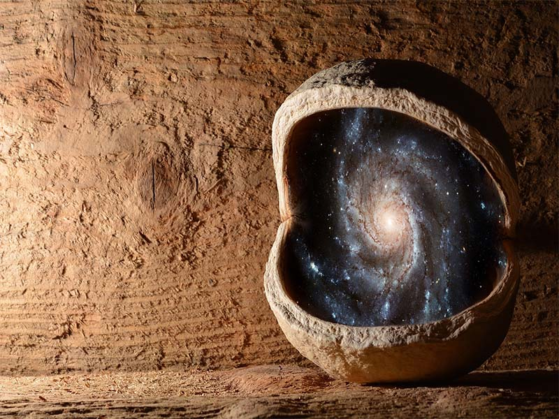

Los astrónomos teóricos utilizan una gran variedad de herramientas como modelos matemáticos analíticos y simulaciones numéricas por computadora. Cada uno tiene sus ventajas. Los modelos matemáticos analíticos de un proceso por lo general, son mejores porque llegan al corazón del problema y explican mejor lo que está sucediendo. Los modelos numéricos, pueden revelar la existencia de fenómenos y efectos que de otra manera no se verían.78
Los teóricos de la astronomía ponen su esfuerzo en crear modelos teóricos e imaginar las consecuencias observacionales de estos modelos. Esto ayuda a los observadores a buscar datos que puedan refutar un modelo o permitan elegir entre varios modelos alternativos o incluso contradictorios.
Los teóricos, también intentan generar o modificar modelos para conseguir nuevos datos. En el caso de una inconsistencia, la tendencia general es tratar de hacer modificaciones mínimas al modelo para que se corresponda con los datos. En algunos casos, una gran cantidad de datos inconsistentes a través del tiempo puede llevar al abandono total de un modelo.
Los temas estudiados por astrónomos teóricos incluyen: dinámica estelar y evolución estelar; formación de galaxias; origen de los rayos cósmicos; relatividad general y cosmología física, incluyendo teoría de cuerdas.
La astromecánica o mecánica celeste tiene por objeto interpretar los movimientos de la astronomía de posición, en el ámbito de la parte de la física conocida como mecánica, generalmente la newtoniana (Ley de la Gravitación Universal de Isaac Newton). Estudia el movimiento de los planetas alrededor del Sol, de sus satélites, el cálculo de las órbitas de cometas y asteroides. El estudio del movimiento de la Luna alrededor de la Tierra fue por su complejidad muy importante para el desarrollo de la ciencia. El movimiento extraño de Urano, causado por las perturbaciones de un planeta hasta entonces desconocido, permitió a Le Verrier y Adams descubrir sobre el papel al planeta Neptuno. El descubrimiento de una pequeña desviación en el avance del perihelio de Mercurio se atribuyó inicialmente a un planeta cercano al Sol hasta que Einstein la explicó con su Teoría de la Relatividad.
La astrofísica es una parte moderna de la astronomía que estudia los astros como cuerpos de la física estudiando su composición, estructura y evolución. Solo fue posible su inicio en el siglo XIX cuando gracias a los espectros se pudo averiguar la composición física de las estrellas. Las ramas de la física implicadas en el estudio son la física nuclear (generación de la energía en el interior de las estrellas) y la física relativística. A densidades elevadas el plasma se transforma en materia degenerada; esto lleva a algunas de sus partículas a adquirir altas velocidades que deberán estar limitadas por la velocidad de la luz, lo cual afectará a sus condiciones de degeneración. Asimismo, en las cercanías de los objetos muy masivos, estrellas de neutrones o agujeros negros, la materia que cae se acelera a velocidades relativistas emitiendo radiación intensa y formando potentes chorros de materia.
El estudio del Universo o Cosmos y más concretamente del Sistema Solar ha planteado una serie de interrogantes y cuestiones, por ejemplo cómo y cuándo se formó el sistema, por qué y cuándo desaparecerá el Sol, por qué hay diferencias físicas entre los planetas, etc.
Es difícil precisar el origen del Sistema Solar. Los científicos creen que puede situarse hace unos 4.600 millones de años, cuando una inmensa nube de gas y polvo empezó a contraerse probablemente, debido a la explosión de una supernova cercana. Alcanzada una densidad mínima ya se autocontrajo a causa de la fuerza de la gravedad y comenzó a girar a gran velocidad, por conservación de su momento cinético, al igual que cuando una patinadora repliega los brazos sobre si misma gira más rápido. La mayor parte de la materia se acumuló en el centro. La presión era tan elevada que los átomos comenzaron a fusionarse, liberando energía y formando una estrella. También había muchas colisiones. Millones de objetos se acercaban y se unían o chocaban con violencia y se partían en trozos. Algunos cuerpos pequeños (planetesimales) iban aumentando su masa mediante colisiones y al crecer, aumentaban su gravedad y recogían más materiales con el paso del tiempo (acreción). Los encuentros constructivos predominaron y, en solo 100 millones de años, adquirió un aspecto semejante al actual. Después cada cuerpo continuó su propia evolución.
Astronomía, José Luis Comellas. Editorial Rialp (1983).
Cosmos, Carl Sagan. Editorial Planeta (1980).
Curso de Astronomía general, Bakulin, Kononóvich y Moroz. Editorial MIR (1987)
{kind=link}